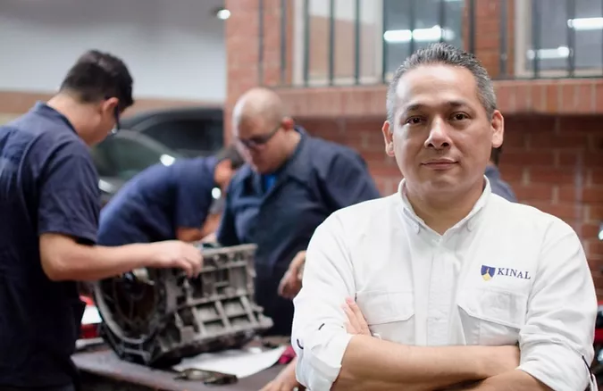
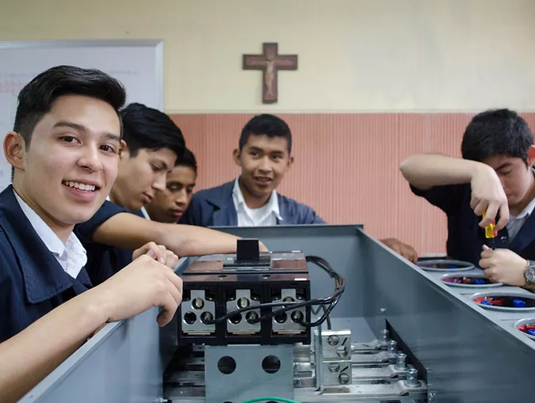
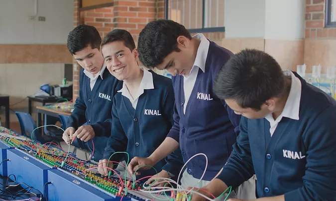
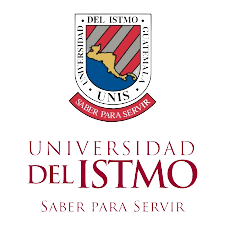
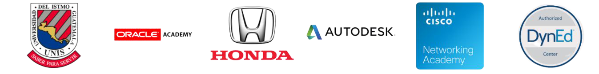

Kinal es un Centro Educativo privado, no lucrativo, dirigido a la formación técnica profesional de jóvenes y adultos, de beneficio colectivo y asistencia social en favor de los sectores más necesitados de la comunidad.
Nuestro valor fundamental es enseñar a realizar el trabajo bien hecho, que sea la base de la superación de alumnos y el medio para servir a los demás.
CAPACÍTATE
Carreras Tecnicas

Contamos con más de 30 especialidades técnicas y tecnológicas que pueden favorecer tu crecimiento y/o tu inserción laboral.
Peritos Tecnicos

Se trabajan los programas técnicos y académicos con jóvenes entre 16 y 20 años para llevarlos a realizar una tarea calificada en alguna especialidad técnica con tres años de duración. Al cabo de los tres años el joven es apto para trabajar en el ramo técnico de la especialidad que eligió estudiar; el título obtenido le permitirá ingresar a la universidad..
Educación Basica

Kinal ofrece su programa de Educación General Básica para todos aquellos jóvenes que buscan una orientación técnica y excelencia académica.
Tecnicos Universitarios
Dirigido al fortalecimiento de mandos medios y especialmente aquellos que han cursado una carrera técnica y desean continuar con estudios a nivel universitario. Estos estudios son avalados por la Universidad del Istmo.

Partners

REDISEÑO
A mi gusto creo que se puede ahorrar espacio ya que creo que para la persona que entre a la plataforma es mejor entrar y tener toda la información a la vista y no tener que estar bajando tanto, esteticamente es mejor la original pero creo que para ir al punto es mejor ahorrar el espacio.